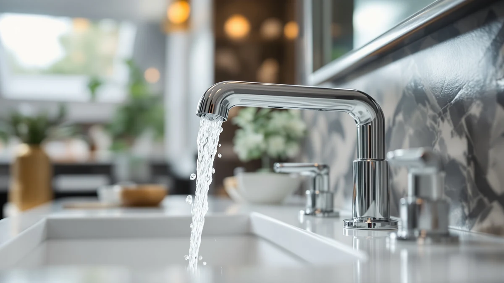

How to Install Delta Bathroom Faucets: Complete Guide (2026)
Prices and picks verified as of October 2026. Independent, reader-supported reviews.


Things to Know Before You Buy
- Match the mounting holes first. Mismatched hole spacing is the most common reason a Delta bathroom faucet install stalls halfway through, since switching between single-hole, centerset, and widespread usually means drilling a new sink or adding an escutcheon plate.
- Old supply lines rarely survive the swap in good shape. New braided stainless lines cost under $10 each and remove a common source of slow leaks.
- Plumber's putty works fine under a metal base plate, but switch to 100% silicone sealant on cultured marble, granite, or other porous countertops, since putty can leave a stain.
- A basin wrench earns its cost here. The mounting nuts sit in a tight gap behind the sink bowl that a standard wrench usually can't reach.
- Shut off both the hot and cold valves, then open the faucet handles to bleed off any pressure still trapped in the lines before you disconnect anything.
Knowing how to install delta bathroom faucets yourself can save you the $150 to $300 a plumber typically charges for a straightforward swap. Delta's centerset and widespread models use the same basic hookup as most other bathroom faucets, so if you've ever tightened a slip-joint nut or swapped a shower head, you already have half the skills this job needs. The whole process breaks down into five steps: shut off the water, pull the old faucet, prep the sink deck, set the new one, and reconnect the lines. Plan on about 45 minutes for a standard three-hole sink, longer if the shutoff valves or supply lines underneath have corroded.
Before you touch a wrench, check two things under the sink. First, confirm the shutoff valves actually turn and seal; a valve that's frozen open can turn a 45-minute job into an afternoon spent shutting off water at the main. Second, measure the hole spacing on your sink or countertop, since Delta sells single-hole, 4-inch centerset, and widespread faucets up to 16 inches apart, and the three mounting systems aren't interchangeable. Once both check out, clear the cabinet below the sink so you have room to work lying on your back, and lay a towel down to catch the water that drains from the old lines.
What You'll Need
- Supplies: plumber's putty or 100% silicone sealant, braided stainless supply lines, and plumber's tape
- Tools: a basin wrench or adjustable wrench and a flashlight or work light, the only tools a typical Delta bathroom faucet install requires
Step 1: Shut Off the Water and Drain the Lines
Reach under the sink and turn both shutoff valves clockwise until they stop. These are usually small oval handles on the wall or floor supply lines; if yours are missing or won't turn, shut off the water at the main valve instead and plan to replace the shutoffs while the cabinet is open.
Once the valves are closed, go back up top and turn the faucet handles on to let any pressure and leftover water drain out through the spout. Place a bucket or towel under the connections, since a few ounces of water will still drip out when you disconnect the supply lines from your Delta faucet in the next step.
Step 2: Remove the Old Faucet
Use an adjustable wrench to disconnect the supply lines from the shutoff valves and from the faucet tailpieces. If your sink's P-trap or cabinet walls block access to the mounting nuts, you may need to loosen the trap's slip nuts first and swing it aside.
Reach up behind the sink bowl with a basin wrench and turn the mounting nuts counterclockwise. Decades-old nuts often corrode in place; a few drops of penetrating oil and ten minutes of patience usually loosens them without forcing a wrench extension or snapping the nut.
With the nuts off, lift the old faucet straight up and out through the mounting holes, clearing space for the new Delta faucet. Scrape away the old putty or caulk ring left on the sink deck with a plastic putty knife so the new gasket sits flat against clean porcelain or stone.
Step 3: Prep the Sink Deck and Test-Fit the New Faucet
Wipe down the sink deck with rubbing alcohol so no soap film or old putty residue is left behind. If your Delta faucet came with a rubber gasket, you typically don't need putty at all; check the included instructions, since Delta ships both gasket-only and putty-required models depending on the line.
Roll a thin rope of plumber's putty and press it around the base of the faucet, or run a bead of silicone sealant if you're working on marble, granite, or another stone surface that putty could stain. Lower the faucet into the mounting holes and press down evenly so the base makes full contact with the sink deck.
Before tightening anything, check that the faucet sits square to the sink and that the handles line up the way you want them. It's much easier to shift the faucet a few degrees now than after the mounting nuts are torqued down.
Step 4: Mount the Delta Faucet and Connect the Supply Lines
From underneath the sink, slide the mounting washers and nuts onto your Delta faucet's tailpieces or shanks and hand-tighten them first. Working between the two sides, snug each nut a little at a time with the basin wrench so the faucet doesn't get pulled off-center, then check topside that no putty squeezed out unevenly.
Wrap plumber's tape clockwise around every threaded connection, including the shutoff valve outlets and the faucet's own inlet threads; two to three wraps is enough. Attach new braided supply lines rather than reusing the old ones; at this point in the job, a $7 line is cheaper than redoing the work if an old one fails next year.
Hand-tighten the supply line nuts onto the shutoff valves and the faucet tailpieces, then give each a final quarter-turn with the wrench. Snug is the goal here, not maximum torque; overtightening compression fittings is one of the more common ways people crack a valve during this exact step.
Step 5: Turn the Water Back On and Check for Leaks
Turn both shutoff valves counterclockwise slowly rather than all at once. Opening them gradually lets air bleed out of the lines instead of slamming into the new connections.
With the water back on, turn the faucet handles on and let it run for a minute. Check the aerator for a steady, even stream and confirm hot and cold are hooked up correctly, since it's easy to cross them if you didn't label the lines earlier.
Finally, get down under the sink with a flashlight and a dry paper towel and touch every connection point: both shutoff valves, both supply line ends, and the base of the Delta faucet itself. A damp towel means a fitting needs another quarter-turn; wait 15 minutes and check again before you put the cabinet back together.
Common Mistakes to Avoid
The most common mistake people make when they look up how to install a Delta bathroom faucet is skipping the test-fit. Setting the faucet down, checking alignment, and lifting it back out before applying putty takes two extra minutes and saves you from redoing a sealed connection because the handles ended up crooked.
Overtightening is the second big one. Compression fittings on supply lines and shutoff valves need a snug connection, not maximum force. Cranking a wrench until it won't turn anymore is how people crack a decades-old valve or strip a plastic nut, turning a 45-minute faucet swap into an emergency call to shut off water at the street.
Reusing old supply lines is a false economy. A braided line that's already five or ten years old has rubber seals partway through their service life; reinstalling it under a brand-new faucet just means you'll be back under the sink again within a year or two when it finally gives out.
Skipping the plumber's tape on threaded connections is another avoidable callback. Even connections that look snug can seep slowly without two or three wraps of tape, and a slow drip under a cabinet often goes unnoticed until it damages the particleboard below.
Finally, don't walk away right after turning the water back on. Give every connection fifteen minutes and a second look with a dry paper towel before you consider the installation done.
Our Top Picks
The install steps above work for any standard bathroom faucet, Delta included, so if you're shopping before you buy, these three options are worth a look across different budgets and styles.

Editor's Pick
Touchless Bathroom Faucet Touchless Bathroom
A hands-free sensor faucet that's worth the extra step of running power or batteries to the sink, especially if hygiene or arthritis makes gripping a handle a daily annoyance.
$87.99
Check Price on Amazon
Best Value
2 Pack Matte Black Waterfall
Two matching waterfall faucets at one price makes this the practical pick for a double-sink vanity, and the flat spout avoids the splashback some waterfall designs cause.
$77.39
Check Price on Amazon
Premium Choice
ZHIXINGKX Touchless Bathroom Sink Faucets
A second touchless option with a different sensor placement than the CDLODIN pick above, worth comparing if the first one's motion zone doesn't fit your sink layout.
$92.99
Check Price on AmazonHow long does it take to install a Delta bathroom faucet?
Most single-hole or centerset installations take about 45 minutes once the water is shut off, assuming the shutoff valves work and the supply lines come off without a fight.
Do I need plumber's putty with a Delta faucet?
It depends on the model.
Frequently Asked Questions
How long does it take to install a Delta bathroom faucet?
Do I need plumber's putty with a Delta faucet?
Can I install a Delta bathroom faucet myself without a plumber?
What's the difference between a centerset and widespread Delta faucet?
Why is water leaking from under my new Delta faucet?
Verdict
Once you've shut off the water, pulled the old fixture, and swapped in fresh supply lines, you'll see that how to install Delta bathroom faucets really comes down to five repeatable steps rather than any special plumbing skill. Delta's centerset and widespread models follow the same mounting logic as most bathroom faucets on the market, so the basin wrench and plumber's tape you already own for other household fixes will get you through this job too. The parts most people underestimate are the small ones: confirming your shutoff valves actually close, matching hole spacing before you buy, and giving every connection a dry-towel check before you call the job finished. Skip those details and you risk a slow leak weeks later instead of a clean install today. Budget 45 minutes for a straightforward swap, a little more if your valves or lines show their age, and you'll have a new Delta faucet running cleanly by the time you'd have spent on hold waiting for a plumber to call back.